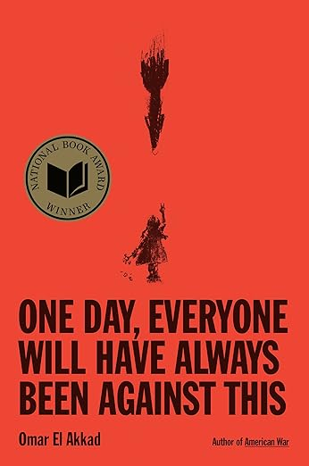
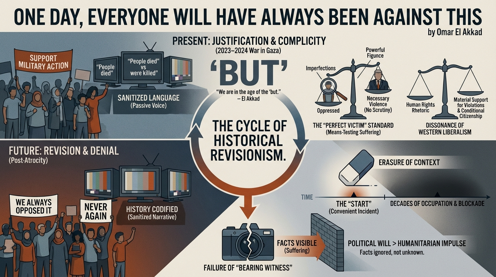

isbn-13: 9798217070251
Audible
AI Generated Content
Generated by gemini-3-pro-preview

One Day, Everyone Will Have Always Been Against This is a long-form essay by journalist and novelist Omar El Akkad. Released as an Amazon Original Story (ISBN 9798217070251), the work combines personal memoir with cultural and political critique regarding the Western response to the 2023–2024 war in Gaza. El Akkad examines the mechanisms of language, the expectations placed on victims of war, and the eventual historical revisionism that allows societies to distance themselves from atrocities they once supported.
Key Points
The Inevitability of Historical Revisionism
El Akkad argues that while Western governments and media currently offer broad support for the military actions in Gaza, history suggests a future shift in narrative. He posits that in the future, once the magnitude of the destruction is fully codified by history, the same institutions and individuals currently justifying the violence will claim they were opposed to it all along. He draws parallels to the 2003 invasion of Iraq, noting how difficult it is now to find people who admit to having supported that war, despite its overwhelming popularity at the time.
The Concept of the “Perfect Victim”
The author critiques the demand that oppressed populations must embody moral perfection to be deemed worthy of survival or empathy. He suggests that the West imposes a “means-testing” on human suffering, where the victims of state violence are scrutinized for any imperfection that might justify their destruction. El Akkad argues that this standard is never applied to the powerful, whose violence is often framed as unfortunate but necessary, whereas the resistance or mere existence of the oppressed is treated as a provocation.
The Sanitization of Language
A significant portion of the essay analyzes the “linguistic gymnastics” employed by Western media. El Akkad highlights the use of the passive voice when describing Palestinian deaths (e.g., “people died” vs. “people were killed”) compared to the active voice used for Israeli deaths. He asserts that this specific deployment of language serves to obscure responsibility and creates a cognitive distance that allows the public to tolerate mass civilian casualties.
“We are living through the era of the conditional sentence, the preamble, the qualification. We are in the age of the ‘but.’”
The Dissonance of Western Liberalism
El Akkad explores the psychological toll of living in the West while witnessing the destruction of one’s ancestral region funded by Western tax dollars. He critiques the hypocrisy of Western liberal democracies that champion human rights and international law rhetorically while offering material support for actions that violate those very laws. He describes the alienation felt by Arab-Americans and Muslims who realize their citizenship is conditional on their silence regarding foreign policy.
The Erasure of Context
The essay addresses the tendency to frame the conflict as beginning only at the moment of a specific attack (such as October 7), thereby erasing decades of historical context, occupation, and blockade. El Akkad argues that starting the clock at a moment convenient to the aggressor is a deliberate tactic to strip the violence of its root causes and present the response as purely defensive and devoid of political choice.
The Failure of “Bearing Witness”
Drawing on his background as a war reporter, El Akkad questions the efficacy of journalism in the face of overwhelming ideological commitment to war. He challenges the traditional journalistic belief that “if people only knew” the extent of the suffering, the war would stop. He concludes that the facts are visible, but they are willfully ignored or recontextualized because the political will to continue the violence supersedes the humanitarian impulse to stop it.
Further Reading
- The Hundred Years’ War on Palestine: A History of Settler Colonialism and Resistance, 1917–2017 by Rashid Khalidi
- Except for Palestine: The Limits of Progressive Politics by Marc Lamont Hill and Mitchell Plitnick
- The Night Heron Barks by Ramsey Hanhan
- Reporting the Siege of Sarajevo by Kenneth Morrison and Paul Lowe (regarding the role of journalism in war)
Quotes
Beyond the high walls and barbed wire and checkpoints this place, there is the empire. And the empire as well is cocooned inside its own fortress of language - a language through the prism of which buildings are never destroyed but rather spontaneously combust, in which blasts come and Chinooks over the mountain, and people are killed as though to be killed is the only natural and rightful ordering of their existence. As though living was the aberration. And this language might protect the empire’s most bloodthirsty fringe, but the fringe has no use for linguistic malpractice. It is instead the middle, the liberal, well-meaning, easily upset middle, that desperately needs the protection this kind of language provides. Because it is the middle of the empire that must look upon this and say: Yes, this is tragic, but necessary, because the alternative is barbarism. The alternative to the countless killed and maimed and orphaned and left without home without school without hospital and the screaming from under the rubble and the corpses disposed of by vultures and dogs and the days-old babies left to scream and starve, is barbarism (Page 5)